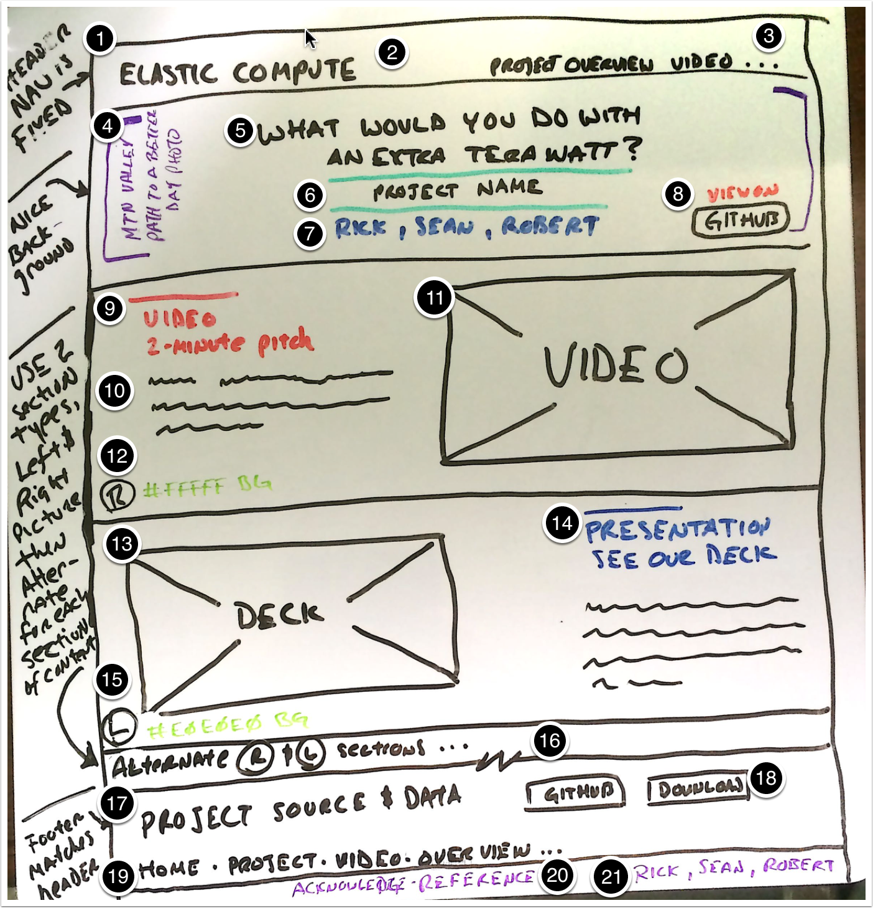

Notes on the design of the project website

Landing Page Sketch

We are going for a modern look that is free of distraction so that our audience can focus on the content
- The header navigation is fixed at the top of the page so that it is always visible even when scrolling
- The project title "Elastic Compute" shoud be in the top left of the fixed nav. It should be a link that reloads the full page, and navigates to the home position
- Links to the major sections of the page, e.g. Overview, Video, Presentation, Findings, Analysis, etc.
- The lead section should include a background image that evokes a feeling of the "a promising way forward"
- Instead of titling the page with "Elastic Compute" we want to ask a provocative question, perhaps" What would you do with an extra Terawatt?". We want the audience to "want" to know more.
- Add a subtitle with the project name "Elastic Compute"
- Author names
- Link back to the Github repo, preferbaly something like "Fork Elastic Compute" or "View on Github"
- Section type A heading
- Section type A copy
- Section type A image or video
- Section type A background color #FFFFFF - white
- Section type B image or video
- Section type B heading and copy
- Section B type background color #E0E0E0 - light grey
- There will be two section types A and B that alternate down the page. The A sections will have the image, video content in the left column and the copy on the right. The B sections will be in reversed. There should be some subtle diffences to visually distinguish the like the background color A being white #FFFFFF and B being a light grey #E0E0E0. There is a lead header with a subtitle followed by content.
- Footer section. Clearly link the project source and data
- Linked buttons to the GitHub repository and provided a direct download link for people who don't use GitHub
- Provide the same navigation at the bottom as is at the top to allow the user to return to a specific section
- Provide a link to the "References & Acknowledgements" page where all citations are kept
- Provide names and links to the GitHub profiles of the project authors